In the most basic setup MulleGLFW is used to get access to a window and OpenGL/Vulkan/Metal context. This is more cumbersome than using UIWindow though.
Just draws three bars of color. Can't get much simpler than that. If this demo fails, something very basic is going wrong. The window is a basic GLFW window. We need to subclass GLFWOSWindow actually to tie MulleCG and MulleGLFW together.
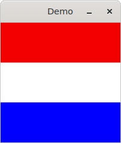
This creates a tiny 64x64 offscreen buffer and fills it with a uniform color. Then draws a circle into it. The buffer is written to a BMP file.
The idea of drawing into CGLayers is expanded on in cglayer.
From here on UIWindow is used to demonstrate MulleCG features.
This is glfw-draw-simple from adapted to MulleUICore. It's much, much less code:
-[CGContext setActive:].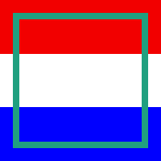
This demo is actually very resource intensive. MulleCG (and nanovg) don't like drawing many discrete lines. Notice the performance problems when resizing. You can pass command line parameter '-r' to use retained (multi-threaded) code. Notice how the problems vanish. If you use '-m' for running retained on the main thread, the problems reappear. Using the retained mode on the main thread can be useful though to detect basic OpenGL/glfw problems.
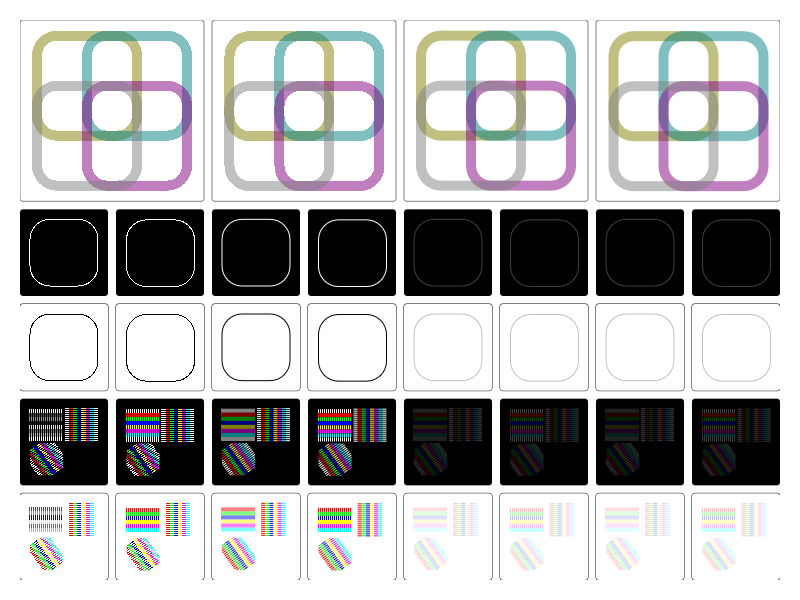
A very basic textured square. Pretty much the simplest texture example possible. The texture is only 8x8 pixels large.
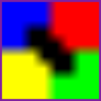
Flipping the textured square along the horizontal axis, the vertical axis and
both. This is done with the options in -drawRect:options:context: and can
be done on any bitmap image:
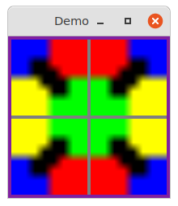
Repeat of the textured square along the horizontal axis, the vertical axis and
both. This can only be done with an UIBitmapImage and options in
-drawRect:options:context:.
The UIBitmapImage will create four separate CGImages, since repeat
is a
property of an individual CGImage:
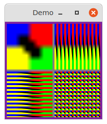
Rotate the texture within the rectangle being displayed. You can also achieve rotation, by rotating the rectangle itself, but this rotates the texture.
The texture is 32x32 pixels large.
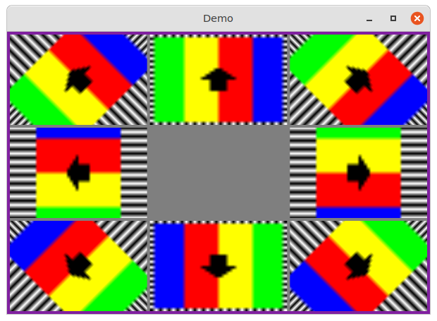
An image that isn't set as CGScaleToFit (which is the default) can be placed
into the center (default) or any corner with the .flags.contentMode of
the CGDrawableOptions. Not super useful in most cases, as the clamping of
OpenGL produces streaks of the outside pixels. This can be done with
any bitmap image.
The texture is 32x32 pixels large.
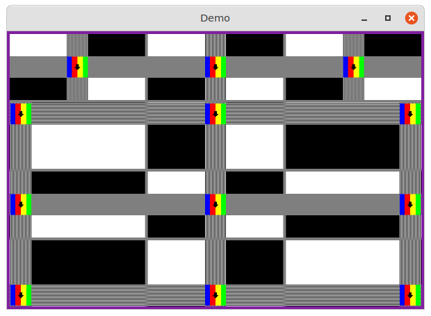
This demo showcases partial use of a texture using
-drawRect:fromRect:options:context:. Ever of the nine segments is created
from the same OpenGL texture, but with different offsets and widths.
The texture is 32x32 pixels large.
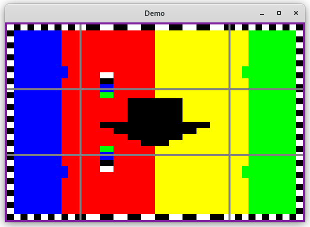
A drawing (the red/white/blue) flag is rendered into an offscreen framebuffer/texture and then used as an image to draw.
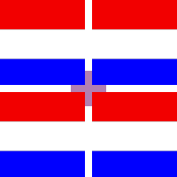
This is a small demonstration of drawing particles with nanovg.
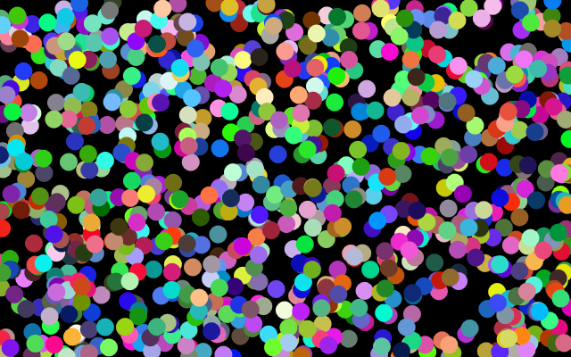
Same as particles, but uses a CALayer for each particle.
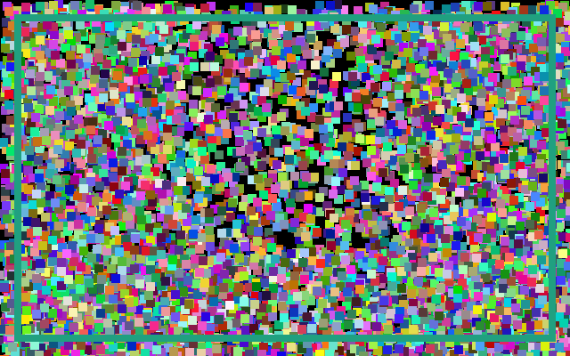
Colors demonstrate the several color models available.
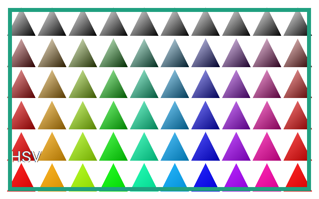
Small text demo with varying size of text.
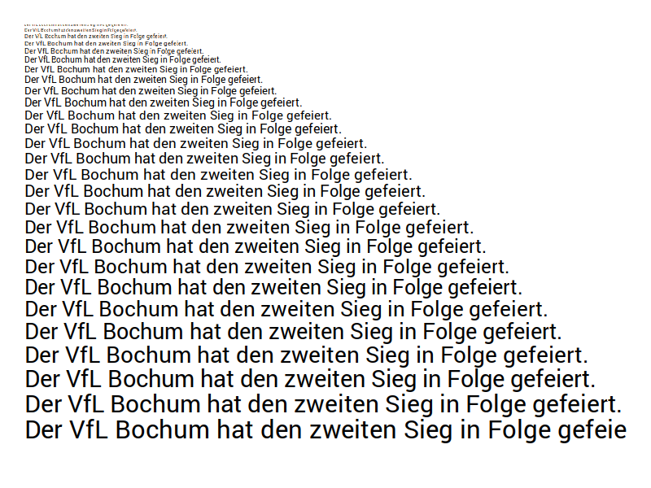
This is a mulle-sde project.
It comes with its own virtual environment and list of dependencies. To fetch and build everything say:
mulle-sde craft